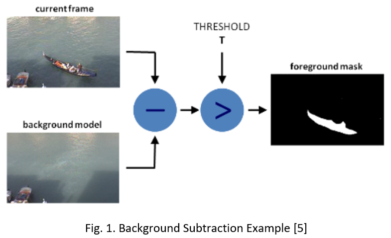
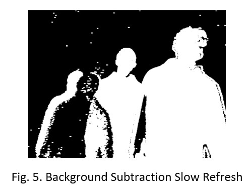
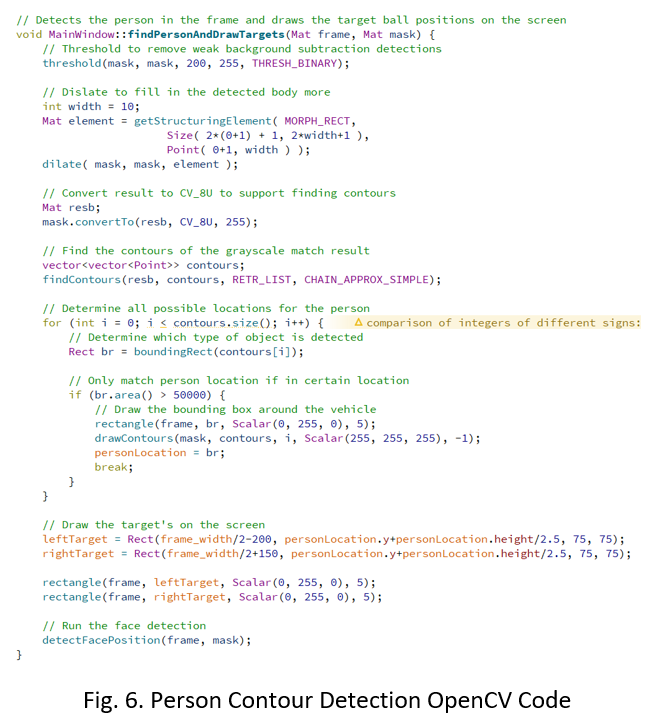
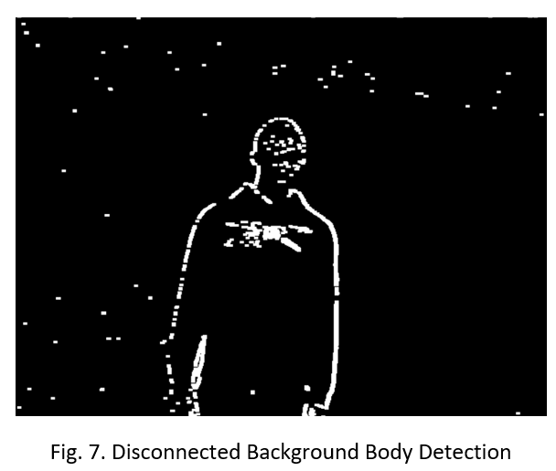
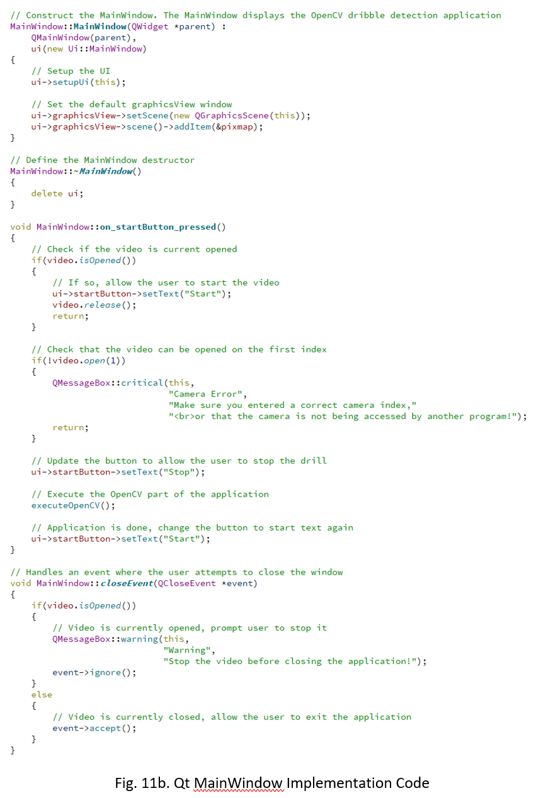
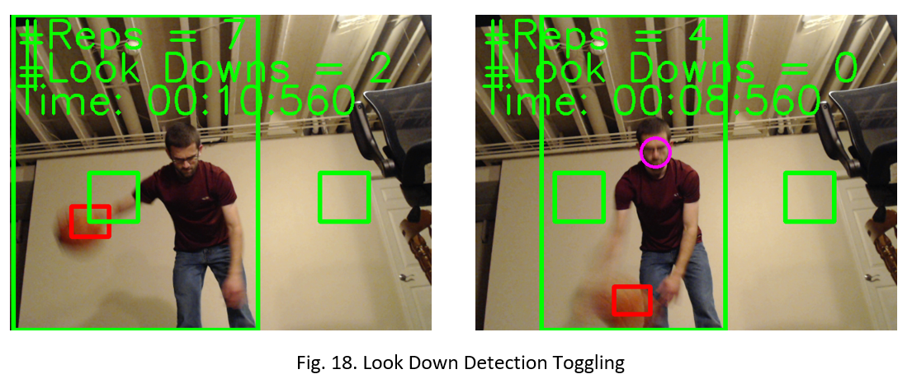

Basketball Dribble Coach is a Computer Vision application that helps basketball players improve their dribbling skills. Basketball Dribble Coach does this through real-time camera detection of a basketball player dribbling a basketball. This project will first track the basketball’s position to determine if it has intersected with target locations on the screen, which represent the locations the basketball should be dribbled to by the player. The player’s position also will be tracked to determine the location of the targets. The face of the player will also be tracked to ensure that the player is looking up while they dribble. This functionality will be included in a Qt application. This paper will cover the background of the project and its implementation and evaluation.
Basketball is one of the most popular sports in the world [1]. Basketball is a unique sport in that it enables a person to practice many aspects of the game without the need for other people. The only needed equipment to practice basketball is a basketball hoop and a basketball, which allows a player to practice shooting a basketball. One of the least fun skills to practice in basketball is dribbling. Unlike shooting a basketball in a hoop, practicing dribbling does not provide the same visual satisfaction that making a shot does. Additionally, long-distance shots or difficult shots are frequently included in highlight reels. While dribbling highlights get shown on highlight reels from time to time, they occur far less often, making them less appealing to improve at. However, it can be argued that dribbling is just as important as being able to make shots. Without the ability for a player to dribble, a player will not be able to move very effectively across the basketball court to find open teammates and create shots for themselves. Basketball Dribble Coach aims to make practicing basketball dribbling more fun. One difficult aspect of practicing dribbling a basketball is the lack of visual feedback on your progress. When a player shoots a basketball into a hoop, they get immediate feedback based on whether the shot goes into the hoop. This type of feedback is not present in dribbling practice unless a player has a coach that gives them real-time feedback as they are dribbling. Basketball Dribble Coach aims to give this feedback to a player without the need for another person giving that feedback to the player. This enables a player to practice dribbling in different settings and without the need to hire a coach. For starters, Basketball Dribble Coach will give the player visual feedback by directly showing a real-time camera feed of them while they are practicing dribbling a basketball. This visual feedback will help the player in many ways. For one, the visual feedback will allow them to see how high, at what location, and at what speed they are dribbling the basketball. In addition to showing the real-time camera of the player, visual indications will be made for the basketball location and the target dribbling locations. This will give the player a goal to strive for. When a player practices dribbling by themselves, it can be difficult to determine whether they are dribbling the ball to the correct location without directly looking down at the basketball. However, looking down while dribbling is not a habit that a player wants to develop as that prevents them from seeing other things on the court. Providing these visual representations within the application through displaying the target dribbling locations will allow the player to create muscle memory of where these locations are such that when they are dribbling outside of practice, they are still maintaining the ball at a low height to enable faster and more controlled dribbling without having to look down at the basketball. Perhaps one of the biggest areas of improvement, especially for young basketball players, is the ability to keep their eyes up while they are dribbling the basketball. Basketball Dribble Coach will integrate face detection to determine whether the player is keeping their head up while they are dribbling. A basketball player needs to be able to dribble while keeping their head up so that they know where the defenders are and, so they are keeping passing and shooting options available. If a player keeps their head down while dribbling, that usually results in a turnover or a poor resulting play. Since basketball is a sport that is easily practiced without the need for other people, Basketball Dribble Coach will provide this ease of practice dribbling.
The target audience for this application can be any range of basketball players looking to improve their dribbling skills. For young or more inexperienced basketball players, this project gives them a fun way to practice dribbling that allows them to visually receive feedback for their dribbling progress. This will be done by allowing the basketball player to see themselves while they are dribbling and keep track of how long it takes them to complete certain drills, so they can improve over time. This project can also be helpful for more experienced basketball players as well as the visual feedback is a great way for a more experienced basketball player to determine what areas of their dribbling may need more improvement. Another target audience of this project is players who do not have access to a dribbling coach or a gym to practice. This project will act as a dribbling coach, giving the player feedback on their dribbling in a way that allows them to improve over time. This feedback will be given visually in real-time while they are dribbling, through the number of repetitions they can complete in a certain number of times, how many times they look down while they are dribbling, and the target dribble locations. Basketball Dribble Coach, in tandem with shooting practice, will enable any basketball player to improve both aspects of their offensive basketball skills.
While practicing basketball dribbling can be done without the use of Basketball Dribble Coach, there are many reasons why this is not an effective approach for practicing dribbling. For one, practicing dribbling without any form of feedback can be difficult and boring. If you ask many basketball players what areas they have been practicing on their game, most will say they are practicing their shooting. This is because practicing shooting gives the player immediate feedback on their progress. It is also satisfying to see the basketball go inside the hoop. This same idea is translated into Basketball Dribble Coach in the aspect of dribble targets. These dribble targets will be placed on the screen to give the player a visual representation of where they need to dribble the basketball. This will also allow the player to determine how close and accurate their dribbling is to that specific location. This will allow the player to have a sense of satisfaction as they can see their accuracy and results improving. In addition to making the process of practicing dribbling more enjoyable for the player, Basketball Dribble Coach also is especially important in today's environment. With the coronavirus causing many to have to stay indoors, Basketball Dribble Coach allows those players who may have gone into a gym to practice their dribbling with others to continue to practice their dribbling and get immediate feedback on their results. Basketball Dribble Coach can be done in many different environments. This allows players to practice their dribbling even during this pandemic. Even after the pandemic is over, Basketball Dribble Coach will still have benefits to players who continue to use it. Even players who have a dribbling coach are not practicing with that coach every time they pick up a basketball. This means when they are practicing on their own, they would need to be very dedicated and focused on giving themselves feedback while practicing. This can take away from other things the players could be thinking about while they are practicing dribbling. Basketball Dribble Coach will give the players this visual feedback to allow them to focus on their technique. Basketball Dribble Coach in tandem with practicing shooting will allow a player to improve their skills on two of the most important aspects of offensive basketball.
The most well-known product that does something like Basketball Dribble Coach is Dribble Up [2]. Dribble Up also provides a real-time camera feed of the player while they are practicing dribbling. It will also track the basketball’s location throughout the dribbling drill and show visual targets on the screen for where the player needs to dribble the basketball. Also, Dribble Up provides various metrics about the player’s dribbling performance such as dribbles per minute, percent of targets hit, and an overall grade. There are a few areas that differentiate Dribble Up from Basketball Dribble Coach. The first is Dribble Up requires the use of a special, brightly colored basketball. This special basketball provides two purposes. The first is the bright color allows for easier tracking of the basketball during the dribbling drill. Bright colors are less likely to be present in other areas of the frame; therefore, it will be easier to determine the location of the basketball by the computer vision algorithm. The second functionality this special basketball provides is an entry into Dribble Up’s subscription-based service. Dribble Up charges a monthly fee to use its products, but the player must also purchase the basketball to be able to sign up for dribble apps monthly subscription service. Dribble Up also does not have face detection, so it will not detect whether the player is looking up while doing their dribbling drill. This is a critical aspect that is missing from Dribble Up that many players struggle with. Also to some of the aspects that Dribble Up does not have, Dribble Up also provides some services that Basketball Dribble Coach will likely not support. Dribble Up provides network connectivity to save, share, and track a player’s statistics and results. Since the focus of Basketball Dribble Coach is on the computer vision aspects, these social and network connectivity features are not supported in Basketball Dribble Coach. Also, Dribble Up provides many different types of dribbling drills and live classes to practice dribbling. These wide ranges of dribble types and life classes will also not be supported by Basketball Dribble Coach. Basketball Dribble Coach is designed to be a standalone application that gives visual feedback that allows basketball players to practice dribbling on their own.
I received my undergraduate degree in computer engineering from Iowa State University with an emphasis on software engineering and machine learning. I also have three summers of internship experience in software engineering and information technology. Additionally, I am currently working full time as a software engineer at John Deere. I believe my strong computer engineering and software engineering background through both my school and industry experience will allow me to be successful in this project. Also, basketball is something that I am deeply passionate about. This means this project combines two of my passions being basketball and software engineering into a single project. Since I have domain knowledge in both areas, I will be able to use that to create an application that is useful and beneficial in its purpose. Not to mention, basketball dribbling is an area that I am looking to improve at, so I will likely be using this application even after I finish this project. Many of my favorite software engineering projects have been projects that I actively use and improve even after the final project is complete. A few examples of these have been me creating an allergy label scanner mobile application, a basketball simulation program, and a study group finder web application. Basketball Dribble Coach will likely also fit into the category of a personal project that I will continue to improve and use. This will make me interested to implement and learn about the different aspects that will be required to successfully complete this project.
There is only a few required equipment for Basketball Dribble Coach. The first is of course a basketball. For the type of basketball, I chose a standard size and colored NBA Spalding basketball. I chose this specific type of basketball as it is likely the most common type of basketball that most basketball players would practice with. While the basic requirements for this project are to only support this one type of basketball, future improvements could be made to support other types of basketballs in the future. In addition to a basketball, the player will also need access to a Computer. The computer will be used to run the application. This computer must also have a webcam or an external camera that will be used to capture the real-time footage of the player. There are no requirements for a specific type of computer or camera. However, a windows computer with at least 8 gigabytes of ram, four CPU cores, and at least 2 gigabytes of storage is recommended for an enjoyable experience. The final piece of equipment required for Basketball Dribble Coach is an environment where there is adequate space to dribble the basketball. Basketball Dribble Coach will not require the player to move around while dribbling; however, the user should be aware of their surroundings and pick a location that will not damage any of the surrounding environment while they are dribbling. Also, the user should choose an environment that will not bother those around them. For example, it is not recommended to use Basketball Dribble Coach in an apartment with multiple stories as the sound of dribbling will be very loud for those around and especially below the apartment unit. It is also recommended that Basketball Dribble Coach be used in a well-lit environment. The experience of Basketball Dribble Coach cannot be guaranteed in poorly lit environments as these environments can make the computer vision detection results unreliable. It is recommended that the user experiments to find a location that results in the best experience for Basketball Dribble Coach.
OpenCV will be used for computer vision detection within the Basketball Dribble Coach application [3]. OpenCV is a free, open-source computer vision framework that supports many of the common computer vision algorithms, machine learning algorithms, and custom user algorithms. I chose OpenCV for this project as OpenCV is commonly used within industry. That also to using OpenCV during this course allowed me to choose OpenCV for this project as it is something that I have a decent background in through the course and something that I can continue to learn throughout my career. I chose to use the C++ language for OpenCV as C++ is what we used in class and is also the language that is that I use at work. Additionally, C++ provides slightly better performance compared to other OpenCV language implementations due to it being a lower-level programming language. This extra boost in performance will be particularly useful for this project as the detection needs to be done in real-time. Real-time detection requires more efficient algorithm implementations and utilization. This is because the results of the computer vision detection need to be displayed in real-time with an acceptable level of frames per second (FPS) maintained for a pleasurable viewing experience. To create the application, I decided to use the Qt framework [4]. I chose the Qt framework because it is a commonly used programming framework to create C++ computer applications. Also, the Qt framework is used at my work, making it a skill that I can apply on the job.
Various computer vision algorithms will be used within Basketball Dribble Coach. First, background subtraction will be executed to remove the background from the image. This is helpful to determine the location of the player and the basketball. The background subtraction algorithm determines which pixels are classified as the background by observing certain pixel values over a period. If a certain pixel value changes over a certain threshold, that pixel will be classified as a foreground element. A background element is classified as a pixel that does not significantly change over a period. In the case of Basketball Dribble Coach, a background element could be a wall, furniture in the background, the ground, or other objects that do not move or are not important to the application’s behavior. Foreground elements are defined as pixels that do significantly change over time and are important to the computer vision results. In the case of Basketball Dribble Coach, the foreground elements will be the player and the basketball. The player and the basketball will be classified as a foreground element as they will usually be changing positions between frames. Performing background subtraction will allow the application to focus on the most important elements during detection.
Once the background subtraction has been done, the resulting masked image will display a white pixel with the value of 255 for pixels that the background subtraction algorithm is almost certain is a foreground element as seen in the example in Fig. 1. The masked image will also contain Gray pixels with a value of around 127 for pixels that are likely to be foreground elements. These pixels could represent objects such as shadows or foreground elements that have not change in value as much as some of the other foreground element pixels. Some examples of Gray pixels could be the feet of a basketball player since they will slightly be moving from frame to frame but may not significantly change in value between frames. Finally, the masked image will contain black pixels with a value of zero that represent background images since these pixels will not significantly change in value. Once the masked image is computed, thresholding will be done to set the gray pixels to zero. This is done because we do not want to detect shadows as foreground elements. Since Basketball Dribble Coach can be used in various settings, this could result in many different shadows or weaker foreground and background detection. Setting these weaker foreground elements to zero values will allow the computer vision algorithm to pick out areas of the image that are highly likely to contain foreground elements such as the player or basketball. Once the thresholding is complete, morphological dilation will be done on the masked image to expand the regions of foreground elements. Dilation will be done to ensure that foreground elements are properly connected and count as a single contour. It may be possible for a single foreground element to be disconnected by a single or multiple pixels, resulting in a single object being classified as two different objects. Dilation will help by ensuring that connected components stay connected. This resulting masked image will then be run through the contours algorithm to determine where likely location of the player is. A contour is defined as an area within an image where there is a significant change between a pixel and its neighboring pixels. Usually, contours are present around the outlines of objects. In the case of the background subtraction masked image, the contours will represent the boundaries between the background dark pixels and the foreground light pixels. Since the player will be a part of the foreground element, computing the contours of the masked image will result in the outline of the player. Once the player’s contour is computed, a bounding box around the player will be drawn on the real-time frame. Also, this player location will be stored within the program to compute things such as where the target dribbling locations should be located, where the basketball is highly likely to be located and to ensure that the player is properly in the frame. After the background subtraction and player detection have been completed, the basketball detection will then execute. For basketball detection, color filter tracking will be used. I chose to use color tracking as the basketball tracking algorithm since color tracking is efficient and effective for tracking certain colored objects. Since Basketball Dribble Coach is a real-time application, more rigorous tracking techniques will likely not be supported on users’ laptops or personal computers. Therefore, I thought it was an appropriate tradeoff for slightly less accurate tracking performance with a slightly higher rate of false positives with color tracking then a more accurate tracking performance with a lower rate of false positives that would result in a lower FPS and worse user experience for the basketball player using the application. To help improve the color tracking performance, the color tracking will only search the foreground elements for the basketball’s location. Since the basketball is going to be moving rapidly from frame to frame, it is almost guaranteed to be fully classified as a foreground element in every frame. Therefore, searching only the foreground elements for the basketball will reduce the computation time and reduce the number of false positives produced by the application. Since Basketball Dribble Coach can be used in many different environments, these different environments may contain different levels of lighting, resulting in a different color for the basketball in every frame. To help detect the basketball’s color within each frame in the most light invariant way, I chose to use HSV color filtering. HSV color filtering stands for Hue Saturation Value where the Hue is the base color being detected. For the case of a basketball, the base color is orange. The saturation controls the depth of the pigment. More saturation means a darker tint to the color while a lighter saturation means a lighter tint to the color. The value of the color represents the amount of lightness or darkness contained within the color. This is especially useful for color tracking in that the amount of light contained within a certain color will be changing from frame to frame. I will determine an optimal HSV value for color tracking by creating an HSV track bar application that will allow fine-tuning of each of the three HSV color parameters. The resulting color filter will contain a masked image where white pixels with a value of 255 represents areas within the image that match the color filter and dark pixels with a value of 0 represent areas within the image that do not contain the color filter. I will then execute the contours algorithm that will return a list of contours that could contain the basketball. To help reduce false positives, I will first check the properties of each contour. For example, I will check the area, height, and width of each of the contours to determine the likelihood that a particular contour is a basketball. For example, a basketball contains roughly the same height and width. This domain knowledge can be used to help remove false-positive contours that do not contain similar height and width values. Once the most probable contour representing the basketball is found, a bounding box will be drawn around the basketball and the basketball's location and bounding box properties will be stored within the application for intersection detection with the targets. Next, the targets will be drawn on the screen using the detected player and basketball properties. The targets will be located approximately at the waist of the player and will be sized to approximately the size of the detected basketball. The waist location for the targets was determined because many coaches and players know that keeping a lower dribble allows for faster and more accurate dribbling. Many coaches strive to have their players keep their dribbles around their waist level to enable these skills. The targets will be roughly the size of the basketball to enable more accurate dribbling by the player. Because the targets will be roughly the size of the basketball, the player will have to be more accurate with their dribbling to ensure that the ball fully intersects with the target locations. Next, the intersection detection will be executed between the detected basketball location and the target dribbling locations. The intersection will be computed by determining whether the bounding rectangles around the target dribbling locations and the detected basketball position intersect. An intersection will be classified as a successful dribble repetition. To ensure that a single dribble repetition is not counted multiple times, a Boolean flag will be stored to represent which target needs to be dribbled to next. This means that until the basketball is detected to intersect the other target, a single basketball target intersection will not be counted multiple times. Put another way, the basketball target intersection must alternate between the left and right sides to count as a valid repetition. The number of repetitions completed by the player will be displayed on the screen in real-time. For face detection, the Haar Cascade algorithm will be used. The Haar Cascade algorithm trains a classifier to pull out the most relevant facial features from an image to determine the location of a face within an image. This training is done by first selecting several features that will be detected in various images. Some of the training images contain pictures that contain one or more faces while other training images contain pictures that contain no faces. The classifier will then train to determine which features most represent a face. A few examples of potential features could be horizontal and vertical lines, edges, various rectangle points, among others. Once the features are detected within the image, the features will be searched for in different sizes of images. This is done to support facial recognition of various sizes. A face will not always show up as the same size between different images as the size of the face depends on the distance to the camera, the amount of zoom on the camera, and the individual. Once the Haar Cascade classifier is trained, the trained model can be used to detect the location of faces within images that were not contained in the training data set. This is what I will be used to detect face locations within Basketball Dribble Coach. I chose to implement the Haar Cascade classifier for facial detection because it combined the simplicity of use with the efficiency of computation. Since Basketball Dribble Coach is a real-time application, the face classifier needs to be efficient in classifying the location of faces within the image. During my research, I determined that Haar classifiers are one of the most efficient face classifiers. Deep learning-based classifiers usually require more computational power to execute, resulting in a lower FPS during detection. I did not want to significantly reduce the FPS experienced in my application just for more accurate face detection. The idea is if the player’s face is found within the image, the program will conclude they are looking up. This is because, in many images, a person is looking directly at the camera, meaning that if the player was looking at the camera, it is highly likely that their face will be detected correctly. However, if they are looking down at the basketball while dribbling, the Haar Cascade classifier will be less likely to classify their face as a face, which means we can count the occurrences of when a face is not detected within the image and keep track of those as the number of times the player has looked down at the basketball while dribbling. This number will be displayed on the camera frame in real-time. Finally, a stopwatch will be displayed on the screen to allow the player to keep track of the amount of time that they have practiced and determine how long it took them to complete a certain drill so they can improve that over time. These are the major computer vision and other algorithms used in be Basketball Dribble Coach application.
Fig. 2 shown above is a mock of the basic user interface for Basketball Dribble Coach. To allow focus on the computer vision aspects of the project, this will be a single-window application. The white area above represents the area where the real-time camera feed will be shown. As can be seen, the basketball will be detected, and a bounding box will be drawn around it. The green squares represent the target dribble locations. The upper left corner will show the running totals for the number of completed reps, the number of times the player has looked down during the drill, and the current elapsed time during the drill. These values and bounding box locations will change during drill execution. There is a single button at the bottom of the window that toggles starting and stopping the dribbling drill. All the data will be stored in the OpenCV real-time camera feed and processor and displayed in the application window above when active.
Fig. 3 above shows an overview of the dataflow between the components of the project. Each of these components was explained in detail in the previous sections. The number of completed repetitions and the number of times the player has looked down while dribbling will be stored within the application. This information will be directly shown on each frame, giving the user indication of their results. The time elapsed during the drill will also be computed for every frame and displayed on the screen. I contemplated adding additional data such as allowing the user to specify the number of repetitions they complete, the amount of time they run the drill, or the type of drill; however, I determined these did not add significant value to the computer vision focus of this project and class. Instead of adding additional user experience features that could be added in the future, I decided to focus on the computer vision aspects of the project instead. Therefore, the specific data that is stored within Basketball Dribble Coach is related to the core of the application and the computer vision algorithms. Also to data that is directly displayed to the user, additional data will be stored to facilitate intersection detection and properly updating the user’s displayed information. For instance, the basketball location, player location, and target locations will be stored within the application to help facilitate intersection detection. Additionally, various flags and values will be stored to properly update the number of dribbles, the number of look downs, and the time elapsed. A Boolean flag will be stored that represents the target that will be intersected next to count as a repetition. This Boolean flag will prevent a single intersection from being counted multiple times between subsequent frames. The last frame the player looked down will also be stored to prevent a single look down from being counted multiple times between subsequent frames. I also anticipate other variables and flags may be required to support the required functionality for this application.
To test the application, at least three different locations containing at least two different lighting conditions will be tested. For each of these environments, a video will be created containing 60 seconds of detection. Each of these videos will be analyzed to determine the accuracy of repetition counting and look down detection. If any modifications need to be made for player detection, the background subtraction algorithm will likely be modified. Since the player detection is utilizing the results of the background subtraction algorithm, changing parameters about the background subtraction algorithm will have a direct impact on the player detection results. If any changes need to be made for facial detection, the Haar Cascade classifier algorithm will be modified. Various parameters control the Haar Cascade classifier results. I anticipate the speed of classification to be the most likely factor that will need to be tuned in the cascade classifiers. If changes to the basketball detection need to be made, the HSV color detection or basketball detection method may need to be modified. The results from these tests will help determine what areas will need to be improved in future iterations.
Success for this project will be defined by at least 90% accuracy of repetition and face detection counting. The test will not analyze each video frame by frame, but each video will be analyzed to determine when misclassifications were made and how often they occur. Once the analysis is completed, patterns will be drawn for similar misclassifications. Misclassifications could occur during certain environments with more difficult detections such as similar colored objects or more objects in the background of an image. Therefore, a 90% success rate will be considered a successful implementation of this project.
For the selection of the different environments, one environment will contain a blank backdrop with a solid color. This environment will represent the easiest and simplest environment that a player could use the Basketball Dribble Coach application. A second environment will contain various items in the background where some are moving and are of similar color to the basketball. This environment will test the background subtraction’s effectiveness. The final environment will be against a window with a different colored light. This environment will test the basketball color detection and how the project handles reflections against a window. These three environments will test various edge conditions of the Basketball Dribble Coach’s detection capabilities. Success in these three different environments will show Basketball Dribble Coach’s effectiveness in many types of environments and backgrounds.
Since I am the only member on this project, I am not able to test this on any other people. However, I will be able to test this with different clothing. The difference in clothing will be used to simulate different people using the Basketball Dribble Coach application. This different clothing will also help determine the usefulness of the person in basketball detectors when different clothing is worn by the player. Some of these pieces of clothing will be of similar color to the basketball to test the program’s effectiveness with color detection. Successful detection with these different clothing combinations will prove Basketball Dribble Coach’s detection effectiveness with different foreground elements.
My implemented person detection algorithm utilizes the OpenCV KNN background subtraction algorithm [4]. This algorithm allows the user to specify the length of the history used by the background subtraction algorithm, which will determine whether a certain pixel should be classified as a background or a foreground element based on its previous values over the history span. The algorithm also takes as input a squared-distance threshold parameter that allows the user to specify the distance threshold between a pixel and a sample to determine whether the pixel is close to a given sample for foreground and background classification of a pixel. The final parameter is used to toggle whether the background subtraction algorithm will detect shadows in an image. Through my experimentation, when this flag is set, it does not properly ignore the shadows of the image. Therefore, I found it more useful to threshold the image with shadows detected to remove the shadows which usually showed up as a Gray pixel in the background subtraction image mask. I found the best results when the history parameter was set to 100 and the threshold parameter was also set to 100. The background subtraction was run on every frame of the real-time camera feed. One of the biggest issues I was encountering was the refresh rate of the background subtraction. I found when the history and the threshold parameter were set to higher values, it took longer for foreground objects that were removed in a prior frame to no longer be classified as a foreground object, giving results shown in Fig. 5 when I was the only person in the frame when moving.
Since the player was frequently moving around within the frame, the refresh between the classification of a foreground and a background element needed to be quick. Setting the history and the threshold parameter to a lower value allows fewer prior values of a pixel to be stored and used to determine foreground and background classification, resulting in a more accurate classification result. The results of the background classification are a foreground mask where the white pixels (255) represent objects that are in the foreground, Gray pixels with a value of around 127 represent pixels that could be foreground objects, and dark pixels with a value of 0 represent background objects.
Once the background subtraction mask was created, I used the OpenCV contours algorithm, modeling my code from [6], to find the resulting contours from the background subtraction masked image as shown in Fig. 6. With any given frame, there could be many contours detected using the find contours algorithm. Many of these contours are noise resulting from the background subtraction algorithm. Some pixels may change just enough for the background subtraction algorithm to classify a particular pixel as a foreground element. Because we use dilation to ensure that components are connected to enable a single object contour detection, this noise may be magnified in the masked image. Even though these noise contours are may be magnified, they will still be significantly smaller than the detected player contour. The dilation is used to help prevent situations similar to that shown on the left side of Fig. 7 where there are disconnected pixels in the person contour.
Therefore, before classifying a contour as a player, I first check the dimensions of the detected contour using the contour’s bounding box properties. The player will take up a significant portion of the screen, making their area significantly larger compared to other detected contours. We can use this information to filter out contours that are not a detected person. Once the most likely contour representing a person is detected, a bounding box will be drawn around that person and that person's location within the image will be stored. After the person detection is complete, the left and right dribble targets will be drawn on the screen. Since these targets should be about hip level, they are placed a little above halfway up the detected person bounding box. This means the target dribble locations will be at a different height depending on who is using the application, creating a more personalized and effective experience. In early iterations, I wanted to have the size of the targets be the same size as the size of the basketball. However, this caused frequently changing left and right target box sizes, which made it difficult for a user to determine exactly where they needed to dribble the basketball. Because of this, I created a fixed size square for the left and right target locations to give the user an accurate spot of where they needed to dribble the basketball instead of a location that was constantly changing sizes. Next, the look down face detection function is called.
The player’s face will be detected within the image using the Haar Cascade classifier code shown in Fig. 8 that is modeled after the code in [8], which uses the OpenCV built-in face detection trained classifier. For face detection, I used the Haar Cascade algorithm with the built-in face detector file. The built-in Haar Classifier face detector file contains a pre-trained model that is tuned to detect faces within an image. The idea is when a face is detected in the image, the program knows the player is not looking down; however, when there is no face detected in the image, the player may be looking down. The detect multiscale function detects faces within the image. There are multiple parameters to this function. The first is the input image to detect the faces. For this application, that would be the frame read in by the camera. The next parameter is a vector containing possible detections of faces within the image. At the end of searching, this vector will contain a list of possible face locations within the image. The next parameter is the scale factor which determines how much the image is scaled up through subsequent executions of the Haar Cascade classifier. A Haar Cascade classifier searches for features at different sizes to classify faces at different scales within the image. Therefore, a smaller scale value means that more sizes of faces would be detected; however, this comes at the expense of computation speed. I found that smaller scale factors resulted in FPS lower than 5, which is not a pleasant user experience. Therefore, I had to make the tradeoff of slightly less accurate facial detection at the cost of better overall real-time detection capabilities performance. Despite having slightly less accurate facial detection, I still found the facial detection performance to be adequate for this application. Once the face location is determined, the program will then determine whether to increment the number of times the player has looked down during the drill. For a look down to be processed, the player’s face must not be detected in 10 consecutive frames. This is to avoid false positives and false negatives from significantly impacting the number of look down results. A more detailed discussion on this topic will come later in the paper.
To begin the basketball detection process, the frame is converted from Blue-Green-Red (BGR) format to HSV format as shown in Fig. 9. By default, OpenCV stores images in BGR format. However, for better tracking results, I needed to use HSV color formatting [7]. After the conversion of the frame has been completed, a thresholding operation is applied to the background subtraction mask to remove the Gray pixels representing pixels that are less likely to be foreground elements than the white pixels. Next, I filtered the HSV color to be in a range that represents the basketball. As we can see, the Hue of the basketball is between the values of 0 and 12. The saturation and value of the basketball have a larger range between 150 and 220. These larger ranges make sense as the basketball will need to be detected in multiple lighting conditions, which results in different amounts of saturation and light levels for the orange basketball. Tuning also needed to take place to not detect a person’s skin and clothing as a basketball. This topic will be discussed in greater detail in the following section. These HSV values were determined using an experimental program that allowed me to change the HSV values such that they were fine-tuned for optimal basketball detection in different lighting conditions and environments. The result of this HSV color filter is a masked image where white pixels represent objects that fall within the color filter and dark pixels represent objects or pixels that do not fall within the color filter. This masked image is then passed to the OpenCV find contours method which will find the resulting contours that represents objects that could potentially be the basketball. Next, I loop through each of the detected contours and use OpenCV's bounding rectangle function to determine the dimensions and properties of the bounding rectangle of the contour, using domain knowledge I have about a basketball to filter out false-positive results. For example, a basketball contains a height and width that are similar to each other and an area that is significant in terms of pixels. This information was used in the if statement to determine whether a particular contour is a basketball or a false-positive. Additionally, I checked whether the detected object has noticeably moved between frames to help remove false-positive basketball detections since the basketball will be moving between frames. False-positive detections are less likely to be significantly moving between frames, so we can ignore those contour detections. Only when these conditions were met did the basketball position gets drawn on the screen. Next, the detected basketball is run through the detection function to determine if it has intersected with either the left or right targets.
For intersection detection, I took the logical and of the basketball location with the left target and checked if that area was greater than 0 as shown in Fig. 10. If so, that means there is an intersection between the basketball and the left target location. An intersection between the ball and the target does not necessarily mean that an increase in the repetition count should occur because we want to make sure we are not double-counting one repetition throughout multiple frames. Therefore, we then check the flag that stores which target needs to be intersected next to count as a valid repetition. If that flag aligns with the current target intersection, the number of repetitions is incremented in the target flag location is set to the other target.
The Qt code I used for Basketball Dribble Coach was heavily based on the Qt OpenCV video integration tutorial found at [9]. I slightly modified it to work for the intended purpose of this application. The Qt main window UI file contains the XML that specifies the layout of the user interface for the application as shown in Fig. 11a. To design this layout, I used Qt Designer, which enables a drag and drop interface for component layout. This Qt application contains a simple layout containing a graphics view to display the OpenCV camera feed and a button that toggles starting and stopping the live camera feed in the application. This UI class elements are used within other aspects such as the C++ and header file for the main window.
The main menu window header file contains the declarations of the Qt application main window functions as shown in Fig. 11b. The main window C++ file contains the implementation for each of these functions. The main window constructor sets up the user interface, which comes from the main window UI file. Also, the constructor creates a default view for the graphics view when there is not currently being information updated to it. In this case, it is a simple white screen. The main window class also has a destructor that will delete the user interface when the main window is closed. The main window contains a single slot that handles when the start button is pressed. In Qt, a signal can be emitted that a slot can subscribe to similar to event-driven programming. In this case, a signal is emitted when the start/stop button is pressed and the on_startButton_pressed() slot accepts it and processed the result. If the start button is pressed when there is currently a video playing, the current camera feed will be stopped, and this function will return execution. If the start button is pressed when there is not currently a camera feed, this function will begin the execution of the OpenCV code that was explained in the prior sections. The final function of the main window is a close event, which will handle when the application is closed by pressing the X button in the top right corner. Since we want to make sure that the application properly destructs its components, we only allow the user to close the application when the camera feed is not running. If the user attempts to close the application when the camera feed is running, a warning message will pop up stating that they will need to close the video feed before being able to exit the application. The final Qt file used in this application is the main.cpp file. This file constructs the Qt application and defines and shows opening the main window application. A sample window from the Qt application is shown when the OpenCV detection is running in Fig. 12.
Most of the headers in this section discuss the computer vision results of Basketball Dribble Coach. There is one heading dedicated to the application result. Fig. 12 displays a sample frame from the Basketball Dribble Coach application. The top left corner of the program keeps track of the number of repetitions the player has been completed, the number of times the player has looked down during the current dribbling drill, and the elapsed time of the current drill. We can also see a red square drawn around the detected basketball. This Red Square will follow the position of the basketball between different frames. We also see a red circle around the detected face within the frame. Also, we can see green squares on both sides of the player. These green squares represent the target dribble location for the player to dribble to count another repetition. The larger green square represents the location of the player. As we can see, the player position location is a large overestimate of the actual position of the player. This is because background subtraction may also count the arms and shadows as foreground elements, creating a larger detected person position.
Fig. 13 shows first the player’s face being detected and the basketball moving from the right to the left. The number of repetitions is four and the number of times the player has looked down is zero in this frame. In a following frame, the ball has intersected with the left target. Because of this, we see the number of repetitions increased to five. The frame on the right also shows that the number of times the player has looked down has increased to one since the player currently is looking down while they are dribbling. We also see that the time elapsed between frames increase. In general, the same behavior of counted repetitions and the number of times the player has looked down is repeated throughout the running of the application.
Fig. 14 shows the basketball tracking throughout an entire dribble iteration. We can see that no matter if the ball is up near a target, up near the player, down toward the player’s feet, or on the left or right side of the player, the basketball is still correctly detected in each of the frames. We also observe some slightly inaccurate ball location detection's when the ball is moving frequently between frames. This is expected because the basketball is being displayed as a blur rather than a solid object, so it is more difficult to pinpoint the exact location of the basketball in these frames. The false-positive detections will be discussed in the next header.
Fig. 15 shows the running of Basketball Dribble Coach when a player is wearing different types of clothing. In the image on the left, the player is wearing jeans and a long-sleeved sweatshirt. A red square in the middle of the player’s sweatshirt is observed. This is because the yellow and red from the Iowa State University logo is similar to the color to the basketball, so the program detects it as a possible basketball. In this frame, the detected logo’s position was either not contained in the last frame or had moved significantly from the player’s movement. In the image on the right, the player is wearing shorts and a t-shirt. This image shows the even though the player’s skin color is similar to the color of the ball, the program does not detect the player’s skin as the ball. These three images show that no matter what type of clothing the player is wearing, the Basketball Dribble Coach ball, face, and counting works as expected.
Fig. 16 shows the Basketball Dribble Coach application run with different backgrounds and lighting environments. The background on the left contains a simple single solid-colored wall with limited objects in the background. The image in the center shows an environment with more objects in the background, and the image on the right shows a background with harsher light and some windows for reflection. In the image on the left, we see only one false-positive of the face and wall being detected as a basketball; however, this does not negatively impact the program execution. In the middle image, there are no observed false-positive. This is due to the background subtraction removing most of the background elements from detection. In the image on the right, there is one false-positive at the bottom of the window. This is likely due to a reflection, but it does not negatively impact the results. We can see in these sample images that the quality of detection is not significantly impacted based on the background contained within the frame. This is expected as the background subtraction algorithm used removes most of the background objects from detection. This means the player can use the application in many different background settings and experience quality results.
One significant challenge to face was accurately detecting the position of the basketball when the player is wearing clothing or there is an object with a color that is similar to the basketball color. Some examples of this are shown in Fig. 17 above when the player is wearing an orange shirt that is close to the color of the orange basketball. In these situations, we see that multiple basketball boxes are drawn on the screen. Since color tracking was used for the tracking of the basketball in this program, issues like this will arise when users are wearing clothing that is similarly colored to the basketball they are using as this is one limitation of using color tracking as the tracking algorithm for Basketball Dribble Coach. Other types of object tracking could have been used for basketball detection; However, these would have introduced additional computational complexity resulting in a fewer number of frames being processed during execution. To compensate for this issue, I decided to draw and check for intersection on all these boxes. This makes it certain the basketball will be properly detected and processed, but we will also see the other detected objects on the screen; however, these do not impact the execution of the program.
Another challenge that I faced was correctly detecting when the player was looking down. I was surprised that the Haar Cascade classifier was able to still classify faces even when most of the player’s face was looking down as seen in Fig. 18. This meant that the player needed to be significantly looking down for the face to not be detected within the frame. It can be seen through some of the videos that the face detection when the player is looking down will toggle between detected and not detected frequently. To handle this situation, I created a flag that will only allow face detections after at least ten frames have been processed that do not contain a face. This prevented the toggling of a face being detected and not detected to be counted as multiple look down. One potential way to resolve this would be to use a training data set that contained mostly faces that were directly looking at the camera. Additionally, a face detection algorithm could be trained to detect when a player was looking down. A data set like this would contain images of people who were looking down toward the ground and the Hard Cascade classifier would then detect when these looking down operations were occurring. I did not have access to an adequate data set to train my own classifier on either of these two situations, so I decided to implement the flag strategy to compensate for these situations.
Fig. 19 shows three samples of the background subtraction masks created by the Basketball Dribble Coach application. We can see that the player and the ball show up as white solid pixels within the image. The white regions are the locations that will be searched to detect the basketball. We also see the presence of various amounts of noise around the player period; However, since the noise is not connected, they are not detected as one solid object that represents the player. This result allows us to accurately detect the player’s position within the frame.
Fig. 20 shows a sample of the basketball color filter tracker mask created by the Basketball Dribble Coach application. The image on the left side shows the raw color filter for the basketball. There are many speckles observed on the basketball’s surface due to the grooves contained on the basketball’s surface reflecting light in different directions. To compensate for this behavior, the morphological dilation operation is done on the original basketball color filter result to allow the detected basketball to appear as a solid object. This result is shown in the right image.
Fig. 21 shows the sample output from my Qt application. We can see the graphics view is filled in with the current frame being displayed from the camera and the overlays being displayed from the basketball dribble program. The user also can toggle stopping and starting the drill using the button shown at the bottom of this window. If this program were to be deployed, it would execute as a simple Windows executable application.
I followed the same testing methodology described in the Evaluation section. I chose three different environments with various background elements and lighting, which are shown in Fig. 16. For each environment, I wore two different sets of clothing, which are shown in Fig. 15. For each of these settings and clothing combinations, I recorded a 60-second video of my dribbling when the application was running. After recording, I analyzed each video to determine the number of repetitions and the number of times the players looked down. I then compared this with the results given by the program and determined the percentage correctly classified. The results are shown and explained in the next header.
Table 1 shows the evaluation results of my program. It can be seen that half of the videos met the 90% success goal for repetition counting; however, the average between all videos exceed the 90% success goal for repetition counting. In the situations where misclassified repetitions occurred, it was usually because the ball was not detected properly, usually because it was moving rapidly and was displayed as a blur. This could have also occurred because the ball in that frame did not display with the expected dimensions (area, width, height). As can be seen, the more complex the background and lighting is, the worse the results become. This is expected as more going on in the frame makes it more difficult for the program to detect the correct objects. For the look down detection results, the average was around 70% correctly classified. Look down detection mostly suffered from overcounting the number of look downs since face detection was more accurate than I thought, even when the player was mostly looking down. The look down detection did not do very well in the window and harsher light setting. I believe the reasoning for this was because more processing was occurring in this setting, resulting in a slower FPS, which meant the player would have to look down longer to have it count as a look down since 10 successive frames were required. Despite these look down numbers are lower than I wanted, I still think the face detect did well considering the model was not trained for the specific use case. Comparing my results to Dribble Up, it becomes clear that Dribble Up has a clear advantage by running their computer vision algorithms in the cloud. Doing so allows them to run more computationally intensive computer vision models without having to worry if the user’s system will support them. Running the models in the cloud allows for a consistent user experience no matter what device the user is running on. This is a future improvement that could be made to my system. Below are the videos used for this analysis.
While the core of the Basketball Dribble Coach application is solid, there are a few user interface and general user experience improvements that could be made. First, the support for additional dribbling drills, customization of the number of repetitions or time to do the drill, and the ability for the user to store and track their progress would be great user experience improvements for the application. Since this project focused on the computer vision aspects, these user experience improvements were not able to be implemented. Also, support for different types of platforms such as mobile devices could also be useful. If mobile devices would be supported, it would be a logical next step to support network connectivity and social aspects to the application, allowing different users to compare their results against their friends, furthering their ability to be able to maximize the outcome from using this application. As mentioned before, this is an application that I plan on continuing to improve and use later, so I will keep some of these improvement possibilities in mind.
There were many lessons that I learned while working on this project. The first was the practical use of computer vision algorithms for a specific project. The homework and this class helped to introduce the application of these projects and algorithms, but this project allowed me to problem solve using computer vision algorithms to create a tangible application that has use in the real world. For example, I learned how basic morphological operations, background subtraction, face detection, and color tracking can be used in real-life applications. This experience allowed me to feel more confident in moving forward when I solve future computer vision-related problems. Another major lesson learned was the difference between computer vision that is real-time and computer vision that is not real-time. In the homework in class, we had mainly been focused on computer vision that is not real-time. This gave the possibility of implementing a solution that may not have been the most efficient way to solve the problem, but since there was no real-time need, it still gave acceptable results. However, this application did have real-time needs therefore, efficient implementation and selection of algorithms needed to be used to create an application that supported and an acceptable range of FPS. This meant that I needed to finetune many of the computer vision algorithm parameters to support efficient and real-time detection. I enjoy the aspect of computer vision to not only solve the problem but also optimize the solution to allow it to run better in real-time. Additionally, I learned about the basics of creating a Qt application that can accept user input and display results given by OpenCV. These will all be extremely useful skills as I continue my career in software engineering and machine learning.